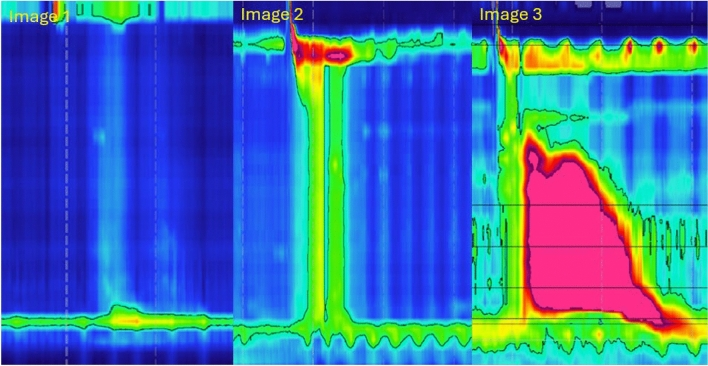

食道弛緩不能症的根本病理變化是食道壁肌層間神經叢（Auerbach’s Plexus / Myenteric Plexus）中抑制性神經元（Inhibitory Neurons）的選擇性退化與喪失。
正常食道的神經控制： - 食道蠕動（Peristalsis）由興奮性和抑制性神經元協調控制 - 興奮性神經元：釋放乙醯膽鹼（Acetylcholine, ACh）和 P 物質（Substance P），引起肌肉收縮 - 抑制性神經元：釋放一氧化氮（Nitric Oxide, NO）和血管活性腸肽（Vasoactive Intestinal Peptide, VIP），引起肌肉放鬆 - 正常的吞嚥需要兩者的精確協調：先抑制（放鬆）→ 再興奮（收縮），形成有序的蠕動波
弛緩不能症的病變： - 抑制性神經元（尤其是產生 NO 的神經元）選擇性喪失 - 興奮性膽鹼能神經元相對保留或較晚受影響 - 結果：下食道括約肌（Lower Esophageal Sphincter, LES）失去抑制性訊號 → 無法放鬆 - 食道體部（Esophageal Body）的蠕動功能也受損 → 缺乏有效的推進蠕動
| 病理特徵 | 描述 |
|---|---|
| 神經節細胞減少（Ganglion Cell Loss） | Auerbach’s plexus 中神經節細胞數量顯著減少至缺如 |
| 淋巴球浸潤（Lymphocytic Infiltration） | 以 CD3+ / CD8+ T 淋巴球為主的發炎浸潤 |
| 神經纖維化（Neural Fibrosis） | 肌層間神經叢周圍纖維化 |
| Cajal 間質細胞減少 | Interstitial Cells of Cajal (ICC) 數量減少 |
| 肌肉層肥厚 | 環狀肌（Circular Muscle）在 LES 區域可見肥厚 |
目前最受支持的致病模型為自體免疫介導的神經退化（Autoimmune-mediated Neurodegeneration）：
flowchart TD
A[遺傳易感性<br/>HLA-DQB1 等基因多型性] --> D[免疫失調]
B[環境觸發因子<br/>病毒感染？] --> D
C[分子模擬<br/>Molecular Mimicry] --> D
D --> E[T 細胞介導的免疫反應<br/>CD3+ / CD8+ T 淋巴球活化]
E --> F[攻擊 Auerbach's plexus<br/>中的抑制性神經元]
F --> G[一氧化氮合酶神經元<br/>nNOS Neurons 喪失]
F --> H[VIP 神經元喪失]
G --> I[LES 無法放鬆<br/>靜止壓升高]
H --> J[食道體部蠕動喪失<br/>Aperistalsis]
I --> K[食道弛緩不能症<br/>Achalasia]
J --> K
K --> L[食物滯留 → 食道擴張<br/>→ 併發症]
style D fill:#FFCDD2
style K fill:#FFCDD2
style G fill:#FFF9C4
style H fill:#FFF9C4支持自體免疫理論的證據： - 神經叢中有活化 T 淋巴球浸潤 - 患者血清中可檢測到抗肌層間神經叢抗體（Anti-myenteric Antibodies） - 與 HLA-DQB1 基因型有關聯 - 部分患者合併其他自體免疫疾病 - 少數病例報告與病毒感染（如 HSV-1、麻疹病毒）有時間關聯
根據芝加哥分類第 4 版（Chicago Classification v4.0, CCv4.0），食道弛緩不能症依照高解析度食道測壓（High-Resolution Manometry, HRM）的特徵分為三個亞型。分型對於預測治療反應至關重要。
所有亞型共同的診斷標準：
| 特徵 | 第一型（Type I） | 第二型（Type II） | 第三型（Type III） |
|---|---|---|---|
| 別名 | 經典型（Classic） | 具泛食道加壓型 | 痙攣型（Spastic） |
| 食道體部蠕動 | 缺乏蠕動（Absent Peristalsis） | 缺乏蠕動但有泛食道加壓 | 痙攣性收縮（Spastic Contractions） |
| 食道體部壓力特徵 | 無顯著壓力化（Minimal Pressurization） | 泛食道加壓（Panesophageal Pressurization）≥ 30 mmHg，在 ≥ 20% 的吞嚥中出現 | 早發型收縮（Premature / Spastic Contractions），DL < 4.5 秒，≥ 20% 的吞嚥 |
| IRP | 升高 | 升高 | 升高 |
| 食道擴張 | 常見，可有巨食道症 | 可能有中度擴張 | 較不明顯 |
| 鋇劑攝影特徵 | 顯著擴張，鳥嘴徵象 | 中度擴張，鳥嘴徵象 | 不規則收縮，螺旋狀（Corkscrew） |
| 佔比 | 約 20 ~ 40% | 約 50 ~ 70%（最常見） | 約 5 ~ 15% |
| 治療反應 | 中等 | 最佳 | 較差（對傳統治療） |
| 最佳治療 | POEM / LHM / PD | POEM / LHM / PD（皆有良好反應） | POEM 為首選（可延長肌肉切開長度） |

圖：弛緩不能症三種亞型的 HRM Clouse Plot 比較。Type I（經典型）：無明顯食道加壓；Type II（加壓型）：全食道加壓；Type III（痙攣型）：早發性痙攣收縮。圖片來源：Wienbeck S, et al. Abdominal Radiology. 2024. CC-BY 4.0. 原文：PMC11947050第一型（Type I）— 經典型： - 食道體部完全缺乏蠕動收縮 - 食道壁壓力低，呈現「無壓力化」（Failed Peristalsis with Minimal Pressurization） - 通常表示疾病進展較久，食道已明顯擴張 - 吞嚥時食道腔內壓力不超過 30 mmHg
第二型（Type II）— 泛食道加壓型： - 食道體部同樣缺乏正常蠕動 - 但吞嚥時出現整個食道同步加壓（Panesophageal Pressurization），壓力 ≥ 30 mmHg - 這種加壓代表食道壁仍有一定的肌肉功能 - 是三型中治療反應最好的，因為括約肌一旦打開，食道的壓力可以推動食物通過 - 佔所有弛緩不能症的最大比例
第三型（Type III）— 痙攣型： - 食道體部出現異常的痙攣性收縮 - 收縮具有過早發生（Premature）的特徵：遠端潛伏期（Distal Latency, DL）< 4.5 秒 - 可能合併高振幅收縮 - 食道不會像第一、二型那樣明顯擴張 - 對氣球擴張和 Heller 手術的治療反應較差 - POEM 可透過延長食道體部的肌肉切開長度來處理痙攣區段
flowchart TD
A[臨床懷疑食道弛緩不能症<br/>吞嚥困難、逆流、胸痛] --> B[上消化道內視鏡 EGD<br/>排除機械性阻塞/腫瘤]
B --> C{內視鏡發現<br/>明確病因?}
C -- 是 --> D[針對性治療<br/>如腫瘤、狹窄等]
C -- 否 --> E[高解析度食道測壓 HRM]
E --> F{IRP 是否升高?<br/>﹥ 正常上限}
F -- 否 --> G[非弛緩不能症<br/>考慮其他食道運動障礙]
F -- 是 --> H{食道體部<br/>蠕動特徵?}
H --> I[無蠕動 + 無顯著加壓<br/>→ Type I 經典型]
H --> J[無蠕動 + 泛食道加壓<br/>>=20% 吞嚥 >=30mmHg<br/>→ Type II 加壓型]
H --> K[痙攣性收縮<br/>DL ﹤4.5s >=20% 吞嚥<br/>→ Type III 痙攣型]
I --> L[鋇劑吞嚥 + TBE<br/>評估食道型態與排空]
J --> L
K --> L
L --> M{是否有乙狀食道<br/>Sigmoid Esophagus?}
M -- 是 --> N[評估食道功能殘餘<br/>考慮手術方式選擇]
M -- 否 --> O[依亞型選擇<br/>最適治療方案]
N --> O
style A fill:#FFF3E0
style I fill:#E3F2FD
style J fill:#E8F5E9
style K fill:#FCE4EC
style O fill:#E8F5E9| 疾病 | 與弛緩不能症的鑑別要點 |
|---|---|
| 假性弛緩不能症（Pseudoachalasia） | 約占所有弛緩不能症表現的 2-4%；由腫瘤（尤其是 EGJ 腺癌）引起；病程短（< 1 年）、年齡 > 55 歲、體重快速減輕；需安排 CT 掃描或內視鏡超音波 (EUS) 排除惡性腫瘤 |
| EGJ 出口阻塞（EGJOO） | IRP 升高但食道蠕動保留；可能是早期弛緩不能症或其他原因 |
| 嗜酸性食道炎（Eosinophilic Esophagitis, EoE） | 內視鏡有典型環狀皺褶；切片見嗜酸性球浸潤；測壓通常正常或 EGJOO |
| 遠端食道痙攣（Distal Esophageal Spasm, DES） | IRP 正常；出現早發型收縮但 < 20% 的吞嚥 |
| 高收縮食道 / 胡桃鉗食道（Hypercontractile / Jackhammer Esophagus） | IRP 正常；DCI 極高（> 8000 mmHg·s·cm） |
| 查加斯病（Chagas Disease） | 流行於中南美洲；由錐蟲（Trypanosoma cruzi）感染引起；症狀類似但有流行病學背景 |
| 硬皮症食道（Scleroderma Esophagus） | LES 壓力低（非高）；食道遠端蠕動喪失但近端正常 |
| 重點 | 說明 |
|---|---|
| 核心病變 | Auerbach’s plexus 抑制性神經元（NO/VIP 神經元）喪失 |
| 致病機轉 | 最可能為自體免疫介導的神經退化 |
| 診斷金標準 | 高解析度食道測壓（HRM），以 IRP 升高為核心 |
| 最常見亞型 | Type II（泛食道加壓型），約佔 50 ~ 70% |
| 治療反應最佳 | Type II > Type I > Type III（對傳統治療） |
| Type III 首選治療 | POEM（可延長切開長度處理痙攣段） |